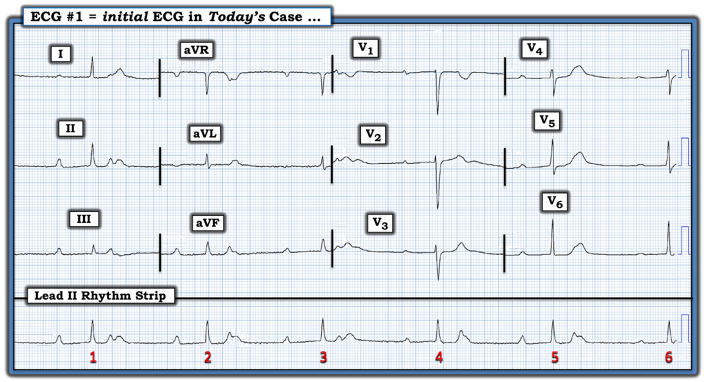
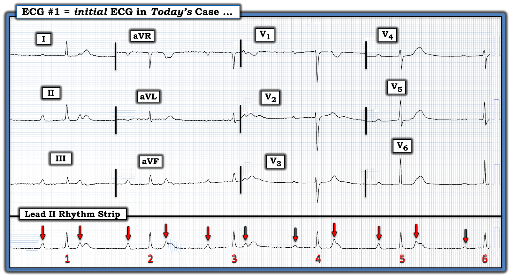
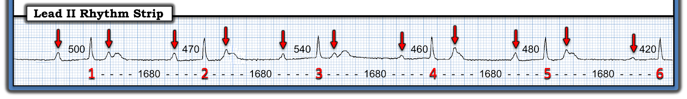
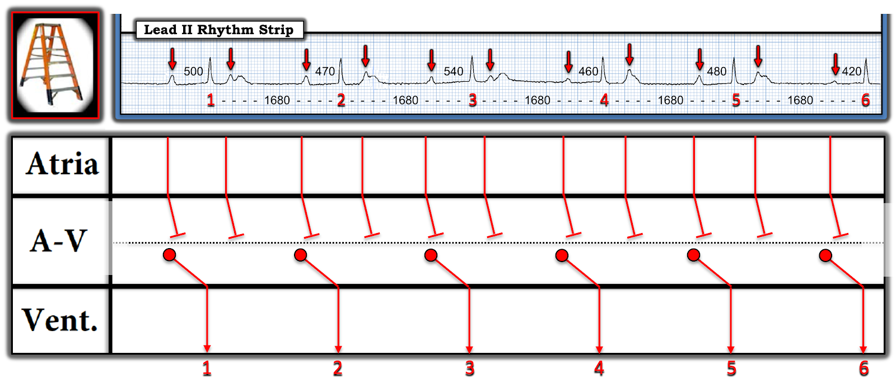
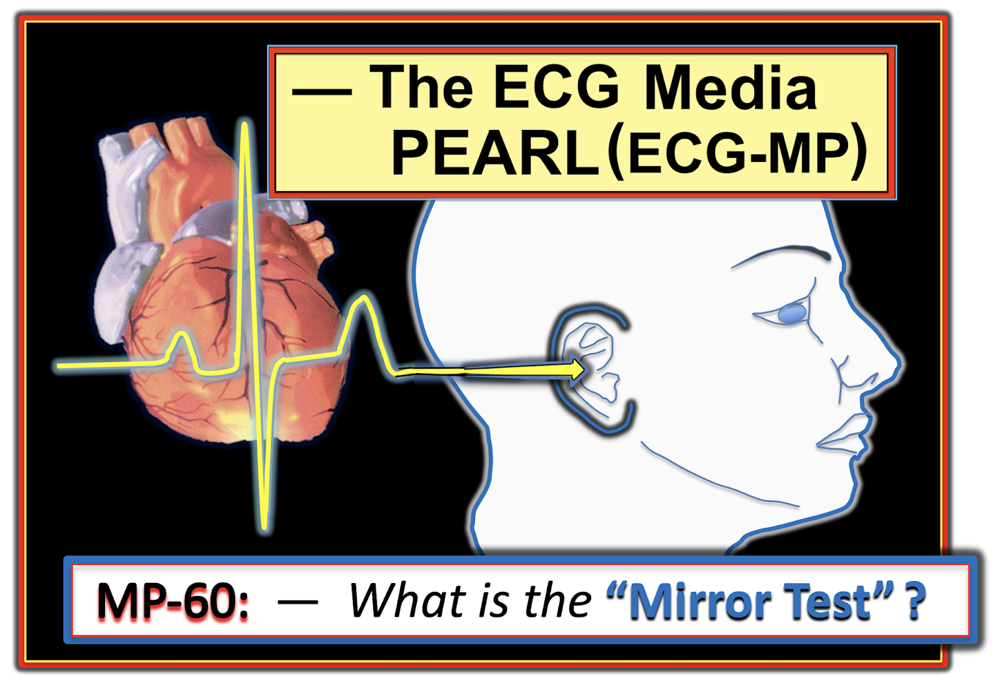

ECG #413 — Điện tâm đồ trước mổ ở một bệnh nhân không triệu chứng
Tôi được gửi bản ghi trong Hình 1 — chỉ được cho biết đây là điện tâm đồ trước mổ của một phụ nữ lớn tuổi không triệu chứng, đã được lên lịch phẫu thuật ngoài tim.
- BẠN sẽ đọc điện tâm đồ này như thế nào?
- Bạn có đồng ý cho bà mổ nếu đây là phẫu thuật không cấp cứu không?


SUY NGHĨ Ban đầu CỦA TÔI về CA BỆNH Hôm nay:
Không nên đồng ý cho bệnh nhân này làm phẫu thuật không cấp cứu.
- Nhìn trước hết vào dải nhịp chuyển đạo II dài — có nhịp chậm đáng kể, với tần số tim (Rate) chỉ dưới 40/phút. Phức bộ QRS hẹp ở cả 12 chuyển đạo — vì vậy nhịp là nhịp trên thất.
- Đáp ứng thất nói chung trông đều (Regular).
- Có sóng P — nhưng chúng có vẻ không liên quan (unRelated) với các phức bộ QRS lân cận (tức là, khoảng PR thay đổi — ít nhất là ở một số nhát).
- ĐIỀU CỐT LÕI: Vì nhiều sóng P trong dải nhịp chuyển đạo II dài này rơi vào những thời điểm trong khoảng R-R mà ở đó chúng dường như có thừa cơ hội để dẫn truyền — vậy mà vẫn không dẫn truyền được — nên có một dạng blốc AV độ 2 (nếu không phải là độ 3), đi kèm với nhịp chậm rõ rệt.
BÌNH LUẬN:
- ĐIỂM THEN CHỐT (PEARL) #1: Tôi đi đến những suy nghĩ ban đầu nêu trên về nhịp hôm nay chỉ trong vòng vài giây sau khi nhìn dải nhịp chuyển đạo II dài. Nhấn mạnh khía cạnh này — việc hiệu quả về thời gian trong chẩn đoán nhịp có thể giúp ra quyết định lâm sàng nhanh chóng — là một trong những mục tiêu chính của tôi khi viết ECG Blog này (tức là, phẫu thuật viên trong ca hôm nay có thể đang chờ kết quả đọc của bạn về điện tâm đồ trước mổ “thường quy” này trước khi tiến hành).
- ĐIỂM THEN CHỐT #2: MẤU CHỐT để đạt hiệu quả thời gian tối ưu — là dùng một cách tiếp cận hệ thống xem xét đủ 5 thông số, dễ nhớ qua câu “Hãy để ý Ps, Qs và 3Rs” (Xem ECG Blog #185 để ôn lại hệ thống này). Áp dụng Ps, Qs, 3Rs cho chúng ta biết chỉ trong vòng vài giây rằng không nên đồng ý cho người phụ nữ 70 tuổi này làm phẫu thuật không cấp cứu.
Còn Điện tâm đồ 12 Chuyển đạo thì sao?
Tuy đánh giá nhanh về nhịp trong ca hôm nay đã đủ để hoãn phẫu thuật không cấp cứu của bệnh nhân này — nhưng vẫn còn nữa!
- Điện tâm đồ 12 chuyển đạo rất đáng lo ngại. Mặc dù chúng ta chỉ thấy 1 hoặc 2 nhát ở mỗi chuyển đạo (vì tần số tim quá chậm) — có đoạn ST thẳng đuỗn kèm chênh xuống nhẹ, có vẻ rõ nhất ở chuyển đạo V3 (đặc biệt đáng chú ý vì bình thường ở chuyển đạo này ST hơi chênh lên!). Đoạn ST thẳng đuỗn cũng thấy ở các chuyển đạo I, aVL; và ở các chuyển đạo V4, V5, V6 (kèm gợi ý ST chênh xuống ở các chuyển đạo V5, V6). Cuối cùng — sóng T ở các chuyển đạo V4, V5, V6 "phình to" ở đỉnh hơn mức lẽ ra phải có (vượt quá những gì có thể dự đoán do sóng P chồng lên các sóng T này). Điểm MẤU CHỐT: Dù phải thừa nhận các thay đổi ST-T nêu trên là kín đáo — việc chúng hiện diện không thể chối cãi ở rất nhiều chuyển đạo (và rõ nhất ở chuyển đạo V3) là có thật!
- ĐIỂM THEN CHỐT #3: Blốc AV độ 2 và độ 3 là biến chứng thường gặp của OMI thành dưới và/hoặc thành sau. Do đó — việc thấy đoạn ST dẹt ở nhiều chuyển đạo, nhưng rõ nhất ở chuyển đạo V3 — ở một bệnh nhân có nhịp chậm và một dạng blốc AV đáng kể — gợi ý mạnh khả năng OMI thành sau mới xảy ra (Xem ECG Blog #351).
- ĐIỂM THEN CHỐT #4: Việc bệnh nhân lớn tuổi hôm nay không có triệu chứng không loại trừ khả năng đã bị nhồi máu cơ tim cấp (hoặc mới xảy ra). Như đã bàn trong ECG Blog #228 — tỷ lệ nhồi máu cơ tim "thầm lặng" (silent MI) có thể cao tới 20-40% tổng số ca nhồi máu cơ tim, đặc biệt thường gặp ở người lớn tuổi.
NHẬN ĐỊNH của tôi về CA BỆNH Hôm nay: Dù không có triệu chứng — từ điện tâm đồ ban đầu, tôi rất nghi ngờ người phụ nữ lớn tuổi này đã bị tắc động mạch LCx (động mạch mũ trái — Left Circumflex) mới xảy ra gây nhồi máu cơ tim thành sau — dẫn đến nhịp chậm với blốc AV độ 2 hoặc độ 3. Do không có triệu chứng — đây là một nhồi máu cơ tim “thầm lặng". Bệnh nhân có thể cần đặt máy tạo nhịp.
- DIỄN TIẾN CỦA CA BỆNH: Các nhân viên y tế trong ca hôm nay đã nhận ra những bất thường nêu trên — và nhanh chóng chuyển bệnh nhân đến một trung tâm có PCI để thông tim và có thể đặt máy tạo nhịp.
==========================
Xem Kỹ hơn Nhịp của ca Hôm nay:
Nhịp ở Hình 1 có một số điểm phức tạp. Vì vậy — tôi cần thêm thời gian trước khi quyết định chẩn đoán nhịp chính xác. Tôi trình bày từng bước quá trình suy nghĩ của mình dưới đây. Nhưng điểm cần nhấn mạnh — là chỉ nên mất vài giây để nhận ra có nhịp chậm do blốc AV đáng kể.
======================
Cách tiếp cận xác định nhịp của tôi:
- ĐIỂM THEN CHỐT #5: Bước đơn giản là đánh dấu các sóng P giúp ích rất nhiều cho chẩn đoán nhịp. Tôi đã làm điều này bằng các mũi tên ĐỎ trong Hình 2.
- Trước khi đánh dấu các sóng P — BẠN có nhận thấy hình dạng sóng P thay đổi nhiều đến mức nào không?
- Nhịp nhĩ trong Hình 2 có đều không? Nếu không — nhận xét này làm phức tạp chẩn đoán nhịp hôm nay như thế nào?


ĐIỂM THEN CHỐT #6: Trong Hình 2 — chẳng phải hình dạng sóng P thay đổi rất nhiều sao? Điều này đặt ra câu hỏi liệu mỗi sóng P có mũi tên ĐỎ có phải là sóng P xoang không? — HAY — nhịp nền là nhịp xoang kèm nhịp đôi nhĩ (tức là, cứ cách một sóng P lại có một PAC?).
- LƯU Ý: Hình dạng sóng P thay đổi ở một mức độ nhất định là thường gặp trong nhịp xoang — có thể do cử động của bệnh nhân (hoặc của dây điện cực) — do nhiễu — hoặc — do các yếu tố phức tạp hơn, có thể bao gồm sự thay đổi vị trí lối ra của khử cực nhĩ từ nút SA — sự thay đổi đường đi của xung động qua tâm nhĩ và/hoặc mức độ blốc dẫn truyền trong nhĩ (Qin và cs.: Circulation 139:1225-1227, 2019 — Pezzuto và cs.: EP Europace 20, 2018 — Platonov: Ann Noninvasive Electrocardiol 17(3):161-169, 2012).
- Tuy thừa nhận rằng hình dạng sóng P thay đổi ở một mức độ nhất định là thường thấy trong nhịp xoang — thông thường sự thay đổi không nhiều như trong Hình 2 (tức là, từ sóng P khá cao và nhọn trước nhát #5 — so với sóng P nhỏ xíu, dẹt trước nhát #6).
- ĐIỀU CỐT LÕI: Dù vậy — tôi rất nghi ngờ rằng mặc dù hình dạng sóng P thay đổi rõ rệt trong bản ghi hôm nay — tất cả các sóng P có mũi tên ĐỎ trong Hình 2 đều là sóng P xoang! Tôi nói vậy dựa vào các khoảng PR và R-R mà tôi sẽ đo ngay sau đây trong Hình 3 (tức là, khoảng PR liên tục thay đổi — trong khi lẽ ra nó phải hằng định nếu nhịp là nhịp xoang kèm nhịp đôi nhĩ).
ĐIỂM THEN CHỐT #7: Như đã thấy rõ ở nhiều ví dụ blốc AV từng xuất hiện trên ECG Blog này — thường gặp loạn nhịp xoang theo pha thất ("ventriculophasic") đi kèm với blốc AV độ 2 hoặc độ 3. Phần lớn các trường hợp (như trong Hình 2) — khoảng P-P ngắn hơn là khoảng “kẹp” một phức bộ QRS ở giữa (giả thuyết cho rằng tưới máu được cải thiện sau khi thất co bóp — dẫn đến khoảng P-P có chứa QRS bị rút ngắn đi một chút).
=============================
Đo các khoảng:
Tôi cần đến compa đo (calipers) để "giải" nhịp hôm nay.
- ĐIỂM THEN CHỐT #8: Điểm then chốt ưa thích của tôi để phân biệt blốc AV độ 2 với blốc AV độ 3 là biết rằng khi có nhịp xoang nền — một phức bộ QRS xuất hiện sớm hơn dự kiến thì có lẽ được dẫn truyền (do đó nhịp khó có thể là blốc AV hoàn toàn!).
- Ngược lại — nhịp thoát trong blốc AV hoàn toàn thường sẽ đều (hoặc ít nhất là gần đều). Đây là lý do việc đo cẩn thận cả khoảng PR lẫn khoảng R-R là thiết yếu để giải nhịp hôm nay (Xem Hình 3).


Áp dụng các số đo trong Hình 3:
- Lưu ý trong Hình 3 rằng nhịp thất hoàn toàn đều! (tức là, tất cả các khoảng R-R = 1680 msec.).
- Lưu ý thêm rằng dù "trông" giống nhau — khoảng PR có thay đổi nhẹ nhưng chắc chắn từ nhát này sang nhát khác. Điều này loại trừ khả năng nhịp xoang kèm nhịp đôi nhĩ — vì khoảng PR thay đổi theo từng nhát (trong khi lẽ ra nó phải hằng định nếu nhịp là nhịp xoang).
- Theo ĐIỂM THEN CHỐT #8 — không nhát nào trong 6 nhát ở Hình 3 xuất hiện sớm hơn dự kiến. Điều này gợi ý mạnh rằng không sóng P có mũi tên ĐỎ nào được dẫn truyền — và nhịp có lẽ là blốc AV hoàn toàn ( = độ 3).
- Như đã nêu ở ĐIỂM THEN CHỐT #6 — dù hình dạng sóng P thay đổi rõ rệt, tôi nghi ngờ rằng tất cả các sóng P có mũi tên ĐỎ đều là xung động xoang. Xét đến khả năng cao là blốc AV hoàn toàn — sẽ rất khó có cùng một kiểu nhịp điệu sóng P (tức là, khoảng P-P ngắn hơn rồi dài hơn) — nếu các biến thể về hình dạng sóng P đều xuất phát từ những ổ nhĩ khác nhau.
- Điểm NÂNG CAO (Vượt ra ngoài phần cốt lõi): Về mặt kỹ thuật, dải nhịp trong bản ghi hôm nay quá ngắn để chứng minh nhịp là blốc AV hoàn toàn. Đó là vì chúng ta không thấy sóng P xuất hiện ở mọi điểm trong khoảng R-R (tức là, không có sóng P nào xuất hiện gần giữa khoảng R-R). Dù vậy, điều này không quan trọng về mặt lâm sàng — vì bất kể mức độ blốc AV, vẫn có chỉ định chuyển ngay đến trung tâm có PCI do khả năng cao có OMI thành sau mới xảy ra kèm nhịp chậm rõ rệt và ít nhất là blốc AV độ 2.
GIẢN ĐỒ BẬC THANG (LADDERGRAM):
Tôi kết thúc phần bình luận bằng một giản đồ bậc thang cho nhịp của ca hôm nay. Ít nhất — không có sóng P có mũi tên ĐỎ nào được dẫn truyền vì: i) Nhịp thất đều (ở đây, với tần số chỉ dưới 40/phút); — và, ii) Khoảng PR liên tục thay đổi.
- Phức bộ QRS hẹp. Điều này xác định ổ nhịp thoát xuất phát từ nút AV hoặc từ bó His (với tần số dưới 40/phút thì hơi chậm đối với một nhịp thoát nút AV).


Điều Cần NHỚ:
- Ca hôm nay truyền tải một số khái niệm nâng cao. Mục tiêu của tôi là thử thách những người đọc điện tâm đồ giàu kinh nghiệm qua việc bàn luận các khái niệm nâng cao này. Như mọi khi — rất hoan nghênh ý kiến của bạn!
- Nhận ra những dấu hiệu điện tâm đồ kín đáo mà tôi chỉ ra trên bản ghi 12 chuyển đạo trong ca hôm nay là những chi tiết quan trọng cần biết! Xin nhấn mạnh: Ngay khi nhận ra nhịp chậm đáng kể kèm một dạng blốc AV nào đó — tôi chủ động tìm bằng chứng của OMI cấp mới xảy ra. Khi hiểu được sự cần thiết phải tìm các dấu hiệu kín đáo của OMI thành dưới và/hoặc thành sau mới xảy ra — bạn sẽ tăng đáng kể khả năng phát hiện ra nó!
- Dù vậy — ca hôm nay truyền tải thông tin quan trọng cho người đọc điện tâm đồ ở mọi trình độ. Hy vọng những người ít kinh nghiệm hơn sẽ thấy được việc áp dụng cách tiếp cận Ps, Qs, 3R cho phép bạn chỉ trong vài giây nhận ra những điểm cốt yếu của nhịp hôm nay, đủ để biết cần hủy phẫu thuật không cấp cứu và nhanh chóng chuyển bệnh nhân này đến một trung tâm có khả năng thông tim.
==============================
Lời cảm ơn: Xin cảm ơn Mohamed Salah (đến từ Muscat, Oman) đã cung cấp ca bệnh và bản ghi này.
==================================
Các bài ECG Blog Liên quan đến ca Hôm nay:
- ECG Blog #205 — Ôn lại Cách tiếp cận hệ thống của tôi để đọc điện tâm đồ 12 chuyển đạo.
- ECG Blog #185 — Ôn lại cách tiếp cận Ps, Qs, 3R để đọc nhịp một cách hệ thống.
- ECG Blog #188 — Ôn lại cách đọc và vẽ giản đồ bậc thang (kèm ĐƯỜNG DẪN tới hơn 100 ca có giản đồ bậc thang — nhiều ca có minh họa tuần tự từng bước).
- ECG Blog #351 — ôn lại chẩn đoán OMI thành sau cấp. Để xem ca minh họa này được trình bày dưới dạng ECG Video — mời xem ECG Blog #406 (Để có Mục lục CÓ LIÊN KẾT cho ECG Video này — bấm vào MORE trong phần Mô tả bên dưới video trên YouTube).
- ECG Blog #405 — Bài trình bày dạng ECG Video ôn lại sự phân biệt giữa phân ly nhĩ thất và blốc AV hoàn toàn (độ 3) (Để có Mục lục CÓ LIÊN KẾT cho ECG Video này — bấm vào MORE trong phần Mô tả bên dưới video trên YouTube).
- ECG Blog #164 — Bài ôn lại từng bước chẩn đoán blốc AV độ 2 Mobitz I (kèm minh họa tuần tự bằng giản đồ bậc thang).
- ECG Blog #258 — Cách "định tuổi" một ổ nhồi máu dựa trên điện tâm đồ ban đầu.
- ECG Blog #294 — Ôn lại cách nhận biết LIỆU động mạch "thủ phạm" đã được tái tưới máu hay chưa.
- ECG Blog #230 — Ôn lại cách so sánh các điện tâm đồ liên tiếp.
- ECG Blog #115 — Cho thấy thay đổi ST-T có thể xảy ra ngoạn mục như thế nào chỉ trong vòng 8 phút.
- ECG Blog #268 — Cho thấy một ví dụ về sóng T tái tưới máu.
- Chẩn đoán OMI từ điện tâm đồ ban đầu — các bản ghi liên tiếp cho thấy tái tưới máu tự phát — rồi tắc lại! — Xem Bình luận của tôi ở cuối trang trong bài đăng ngày 14 tháng 10 năm 2020 trên Dr. Smith's ECG Blog.
- OMI cấp không được bác sĩ phụ trách chấp nhận — Xem Bình luận của tôi ở cuối trang trong bài đăng ngày 21 tháng 11 năm 2020 trên Dr. Smith’s ECG Blog.
- Thêm một ca OMI bị bỏ sót (Bác sĩ tim mạch bị giới hạn bởi định nghĩa STEMI — OMI thấy rõ nhờ nghiệm pháp soi gương (Mirror Test)) — Xem Bình luận của tôi ở cuối trang trong bài đăng ngày 21 tháng 9 năm 2020 trên Dr. Smith’s ECG Blog.
- Nhận biết sóng T tối cấp — các nhóm chuyển đạo — một OMI (dù không phải STEMI) — Xem Bình luận của tôi ở cuối trang trong bài đăng ngày 8 tháng 11 năm 2020 trên Dr. Smith's ECG Blog.
PHẦN BỔ SUNG (20/1/2024):
- Dưới đây là một loạt tài liệu bổ sung liên quan đến ca hôm nay.
Tải PDF miễn phí các Phần liên quan trong cuốn ECG-2014-ePub của tôi:
- Tệp PDF: Tổng quan về tuần hoàn vành và động mạch “thủ phạm” trong nhồi máu cơ tim cấp —
- Tệp PDF: Nhồi máu cơ tim thành sau và “nghiệm pháp soi gương (Mirror Test)” —



ECG Media PEARL #60 (8:30 phút Audio) — Ôn lại cách dùng "Nghiệm pháp Soi gương" (Mirror Test) để giúp nhận biết: i) Nhồi máu cơ tim thành sau cấp; ii) Nhồi máu cơ tim bên cao hoặc thành dưới cấp (tức là, mối quan hệ soi gương (reciprocal) "kỳ diệu" giữa chuyển đạo III và aVL); và, iii) ST chênh lên ở thành trước do LVH (không phải là dấu hiệu nhồi máu cơ tim thành trước).

ECG Media PEARL #10 (10 phút Audio) — ôn lại lý do vì sao thuật ngữ “OMI” ( = nhồi máu cơ tim do tắc — Occlusion-based MI) nên thay thế thuật ngữ quen thuộc hơn là STEMI — và — ôn lại những điều cơ bản về cách dự đoán động mạch "thủ phạm".

ECG Media PEARL #11 (6 phút Audio) — Ôn lại cách nhận biết LIỆU động mạch (tức là, bị tắc cấp) “thủ phạm” đã được tái tưới máu hay chưa, dựa trên tiêu chuẩn lâm sàng và điện tâm đồ.
==================================
Tài liệu Bổ sung về CA BỆNH Hôm nay:


ECG Media Pearl #8 (8:20 phút Video) — ECG Blog #191 — Phân biệt giữa Phân ly Nhĩ thất và blốc AV hoàn toàn (6/2/2021).

ECG Media Pearl #9 (5:40 phút Video) — ECG Blog #192 — Ôn lại 3 nguyên nhân gây phân ly nhĩ thất (9/2/2021).
- Phần 2F (6 trang = Câu trả lời "ngắn") trong cuốn ECG-2014 Pocket Brain của tôi cung cấp phần ôn tập nhanh bằng văn bản về các blốc AV (Tài liệu này được tải miễn phí).
- Phần 20 (54 trang = Câu trả lời "dài") trong cuốn ACLS-2013-Arrhythmias bản Mở rộng (Expanded Version) của tôi bàn luận chi tiết các blốc AV LÀ GÌ — và KHÔNG phải là gì! (Tài liệu này được tải miễn phí).